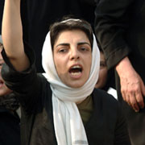

|
|
|
Browsing
Contact Us |
Campaigners |
Face to Face |
Tribune |
Interview |
News |
On the Web |
One Million |
Report
Farsi | Français | German | Italian | Spanish | العربية Also in this section
|
 Iran Time to Change the QuestionInterview with Parvin Ardalan Wednesday 10 March 2010 Parvin Ardalan spoke to Jane Gabriel at the UN CSW about the link between a conversation with her father and her work fighting for the rights and freedom of both men and women in Iran, and why it’s time the international community changed the question: how can we help? View online : Open Democracy Jane: When you won the Olof Palme prize in 2005 it was "for making the equal rights of men and women central to the struggle for democracy in Iran". To what extent has the green movement taken on board your demands for equal rights? Parvin: Women in Iran started asking for their rights a hundred years ago, first for the right to education, then to be part of the parliament, and then the right to reform civil Family Law and then for the right to vote. After the 1979 revolution we lost some of the rights that we had achieved- such as the right of Muslim women not to cover; and they had made polygamy much harder before the revolution and it got much easier again. The laws were religious, the government was religious, the power was religious. We either had to accept that all of these things were happening under the umbrella of Islam, or we had to put effort into changing our situation. And so once again we started fighting for these rights. In the last 30 years women have been able to use a variety of strategies to build a peaceful movement. The three major things we’ve tried to do are to make all this work face to face, to make it mainstream, and to raise public awareness. We have always worked to build the movement horizontally without a vertical structure. If you notice in the green movement it started with the right to vote. ’Where is my vote?’ was the first prominent slogan and it came to mean ’Where is my right?’, so when the green movement began, it used the strategies of the women’s movement - in particular the One Million Signatures campaign in its work. The two movements are similar - they both want rights and freedom, they both act peacefully and both are widespread, horizontal movements. The women’s movement was smaller of course, but it has grown little by little over three years. We weren’t fighting for power - for political power - we were fighting for our rights. So in this sense both the movements were for rights. The June 12th election was for political power, but when the people found they could not vote and get their rights by voting, that’s when it transformed into a vast social movement. It was a natural process. Many of the people who were inside the green movement were people from the One Million Signatures campaign so there wasn’t a sense that we had to ask the green movement to include our demands because we were ourselves inside the movement. There were different movements during the time we did not have political parties - like student’s movements, worker’s movements, women’s movements - all of these movements became part of the green movement, the movement for democracy and for rights. They are not subordinate to it. When someone is searching for their rights they are saying "I am responsible for making my demands" and “I am inside this social movement”. I have never called this movement the ’green movement’ because it is really a diverse movement with various demands. That’s how I see it. I don’t say that this is a green movement and this is a women’s movement because when asking where our votes are we are asking where our rights are, we are talking about the rights of society as a whole. When I am fighting for my rights I am fighting for equal rights between men and women. When you are fighting for the freedom to vote these are universal rights and you can’t separate the women’s part from the men’s part. These are everyone’s rights. There was some disagreement in the women’s movement because some women thought that Mousavi and Karoubi should include our demands in their speeches and campaigns, but others felt that it wasn’t necessary for the politicians to express our demands because we were already making them very clearly. So the women’s movement began campaigns with other groups, Call for solidarity: Freedom and Gender Equality in Iran which means that we are trying to support both genders, and the fight is for equal rights and freedom. We added the request for freedom to the request for gender equality and it has become a more main discourse, and in the last six months the Iranian people have been able to show the world that they are after freedom and rights. Many of the women’s groups decided after the election not to communicate with the government because it has lost its legitimacy. For example, they collected all these signatures for the One Million Signatures campaign to give to the parliament, but now people no longer want to sign anything because they believe that no demands should be sent to a government that has no legitimacy. The situation has changed - people want gender equality but they don’t think the approach is to go to this government to get it. So currently even the groups that did have contact with the government, no longer do. I believe that if the Ahmadinejad government stays in place, overtime what might happen is that they might try and engage with these groups in order to try to gain legitimacy again. Right now this doesn’t exist. There is still a group within the women’s movement working on family law issues and another on equal rights, because a number of groups were formed as a result of the One Million Signatures campaign. When the green movement started to flourish the government introduced a new ’Family Protection’ Bill that makes polygamy easier; parliament initially approved this bill, but we demonstrated against it and the clause on polygamy was modified so that the first wife must give permission for her husband to have other wives. They thought that people weren’t watching, but women were being watchful and continued lobbying specifically on women’s issues. Now while people are being arrested and are in jail the women’s movement is still protesting and is a powerful force against the government. And it’s clear that the government understands that the strategies being used by the green movement and the women’s movement are the same, and that these strategies have been institutionalised. Jane: What does your mother think of your work as a right’s activist? Parvin: She’s very proud of me. She had a bad experience after the revolution, because the Family Law allowed my father [to get] re-married again with another women and then so our life, or my mother’s life was very damaged, it was changed. Then she told me that if I wanted to become a journalist, I could write about these things, but that if I wanted to say everything I could be taken to court in order not to let other people lose their rights and so I continue to do this, I continue to follow her wishes. Q: Are you in touch with your father? Parvin: My father died. Q: Did he die before you became an internationally known women’s rights activist? Parvin: When he was alive I was well known in Iran, but not well known internationally. Q: Did you have any conversations with him before he died about your values and your mother’s values? Parvin: Yes I talked with him. First of all I told him that I hated him for what he had done to my mother, but gradually we formed a friendship, a relationship with each other, and I began to think that he was also one of the victims of the law - along with my mother and his other wife - and that’s when I understood that we had to change such laws. I told him that if he knew more about polygamy he wouldn’t have done it, and he became very angry. First of all he said it was his right, and that it came from Islam. I told him that it wasn’t a right given to him by Islam but something given to him by the law. And then we discussed more and he understood that I understood that it was not his fault. He changed a bit then and said “it is the law and it was my right and I took it, so if you want to take it you should try and change it” and I said “I will try to take it from you” - and of course that’s what happened… My brothers and sister support me too, but sometimes they think you cannot change everything. But we’ve always thought ’Yes we can’ change. And it’s so funny that when Obama came along that was his slogan - he was following us! And when Karoubi campaigned, his slogan was ’Change’ and so I think that we can say that changing is the idea that started from women, because we were in such a bad situation, and when you lose everything - that’s when you start to create change. I think we started the idea of change and now everybody has started too. Q: How difficult have the past ten years been for you? Parvin: I’ve been working in women’s rights for more than ten years. For many years now we have organized demonstrations for women in different parts of Iran, and we have been arrested and given sentences. I have been interrogated under every single president since Rafsanjani; they are all the same, but have slightly different versions. So I have a lot of experience with being under pressure from the governments. After Ahmadinejad came we organised a demonstration for women’s rights and they arrested 70 people, and they sentenced me to three years with a minimum of serving six months. The case is still going through the courts. Q: How did winning the Olof Palme Prize in 2005 affect your work? Parvin: Of course it was a good thing because it was a time when we were oppressed and also it was a non-governmental prize of course, so for me it has some legitimacy. I was happy because I knew that the prize was for people who struggle for democracy. It has made me more secure and it has given me more responsibility. The government continues the pressure, but I don’t want to stop being an activist because I think that the peaceful action we are engaged in and what we are struggling for is too important to stop. Sometimes I feel so tired I want to give up, but most of the time, no, because when I look into the future I know that if or when they do stop us it will be very sad, because little by little you can see that another generation is coming up, the young generation in Iran is very hopeful for things, and when I was arrested and sentenced it was a very bad time for me, but then when I went back out on to the street I saw so many people were there too. Q: One of the debates here at the UN Commission on the Status of Women meeting is the extent to which women should make an effort to engage with men. Are you making an effort to engage with men in the movement for equality? Parvin: When we started this movement we started working with women because we needed empowerment. But little by little, as we made ourselves more empowered, we started working with other movements and men. When we ran the One Million Signature campaign we understood that if you want to change the idea for demanding equal rights you need to talk with men, and now we have some men who are activists fighting for women’s rights. One of them is very well known, Kaveh Kermanshahi, he’s a very nice man and he is now in jail because of his work with us and for the rights of the Kurdish people. When we started fighting for our rights we understood the need to honour the rights of others too, and to collaborate in our work. So now we have men for equality and working on the One Million Signature campaign, and so if they are working for equal rights it means they are fighting for women’s rights too. Now when we talk about gender equality movements and our campaign Call for solidarity: Freedom and Gender Equality in Iran it means that it’s not just for women, it’s for all of the men too that we are fighting for rights and freedom. Q: Why do you think it’s worth coming to the UN CSW in New York? Parvin: We have built these campaigns and networks so we can get global solidarity support from the world, and on March 8th (IWD) we are asking all these groups here in New York at the 54th UN Commission on the Status of Women to get involved and fight for gender and equality in Iran and for the world. We have asked women around the world who are having March 8th events to include in their discussions and materials, information about women’s rights issues and struggles in Iran. And our second request is that they put pressure on their governments to put pressure on the government of Iran to free the political prisoners, because we believe that the people who are now in prison are there because they too are fighting for their freedoms and equality. It’s important to continue to build the network beyond the model of the One Million Signatures campaign. But when I come here everyone asks "how can we help you?" They ask the same question all the time and I think that we should change the question to "how can we help each other?" It’s important. If you think you can help me, you are here and I am over there. But when we ask how we can help each other it means we are thinking on more equal terms. And when we are working at an equal level we can help each other. So before you think you are helping, change your question, and after that we can do everything. With thanks to Firuzeh Mahmoudi for translation. |